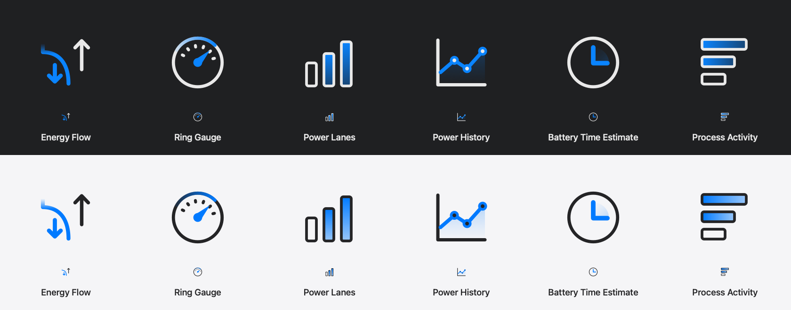
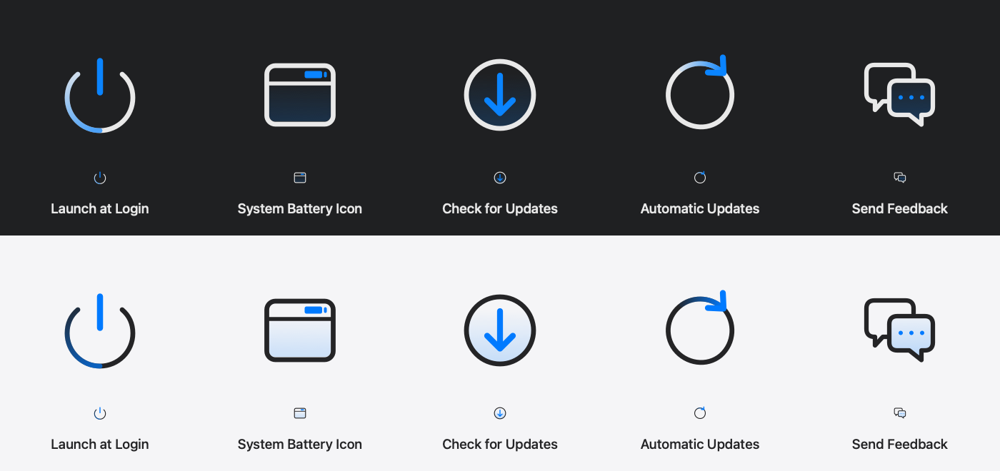

Approved design gallery
Rounded neutral contours, blue accents and the Power state palette. Browse the approved icon artwork included in Wattson 5.0.1 and download its editable SVG masters.
The images are retained native offscreen artwork proofs, copied unchanged from the approved source artwork. They are not screenshots of the running app.
Settings artwork · Dark / Light
Each proof shows Dark above Light. The sidebar proof adds emphasized-selection artwork below the pair. These proofs retain the latest approved Settings and Power source artwork.



Power artwork · full state matrix
The production Flow and Lane drawing paths use fixed supply-state fixtures. Charging uses green, plugged-in states use blue, mixed supply uses amber for battery assistance, and on-battery adapter artwork is neutral and dimmed.


Editable SVG originals
Version-labeled packages contain 19 approved runtime SVG masters copied byte-for-byte from the 5.0.1 source. All use transparent vector artboards without embedded bitmaps or external resources. Native AppKit paths supply runtime appearance and state colors.
Asset provenance · Design checksums · Artwork notes
Design downloads remain separate from installer assets. See the GitHub release page for PKG/DMG installation and signing guidance.